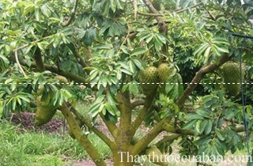

Tên khác
Tên thường gọi: Mãng cầu xiêm, mãng cầu gai, na xiêm, na gai
Tên tiếng Trung: 刺果番荔枝
Tên khoa học: Annona muricata L.
Họ khoa học: thuộc họ Na - Annonaceae.
Cây mãng cầu xiêm
(Mô tả, hình ảnh cây mãng cầu xiêm, phân bố, thu hái, thành phần hóa học, tác dụng dược lý...)
Mô tả:

Bộ phận dùng:
Vỏ, quả, lá và hạt - Cortex, Fructus, Folium et Semen Annonae Muricatae.
Nơi sống và thu hái:
Gốc ở Mỹ châu nhiệt đới (quần đảo Ang ti) được nhập trồng để lấy quả ăn. Thu hái quả chín ăn tươi, lấy hạt già. Quả xanh đem phơi khô, tán bột. Lá dùng tươi.
Thành phần hoá học:
Hạt chứa 0,05% alcaloid mà 2 alcaloid kết tinh đã tách được là muricin và muricinin. Lá chứa tinh dầu mùi dễ chịu, một lượng khá cao chlorua kali, tanin và bột, alcaloid có hàm lượng thấp và một chất nhựa. Hạt cũng chứa alcaloid.
Quả có chứa một lượng đáng kể vitamin C, vitamin B1 và vitamin B2.
Tác dụng dược lý
Nghiên cứu sơ bộ bằng ống nghiệm trong phòng thí nghiệm cho thấy mãng cầu Xiêm có tiềm năng để điều trị một số bệnh nhiễm trùng. Nghiên cứu thực hiện ở vùng biển Caribbe đã đưa ra một mối liên hệ giữa sự tiêu thụ của mãng cầu Xiêm và các hình thức không điển hình của bệnh Parkinson do nồng độ rất cao của annonacin
Hợp chất annonacin chứa trong hạt của mãng cầu xiêm là một chất độc thần kinh và nó có vẻ là nguyên nhân gây ra một bệnh thoái hóa thần kinh. Nhóm người duy nhất được biết bị ảnh hưởng trực tiếp sống trên đảo Guadeloupe ở biển Caribe và các vấn đề xảy ra có lẽ do việc tiêu thụ quá nhiều loại cây có chứa annonacin. Các rối loạn được gọi là tauopathy có liên hệ đến sự tích lũy bệnh lý của tau protein trong não. Những kết quả thực nghiệm đã xác nhận một cách chắc chắn lần đầu tiên rằng cây có chứa chất độc thần kinh annonacin chịu trách nhiệm về sự tích lũy này.
Vị thuốc mãng cầu xiêm
(Công dụng, liều dùng, tính vị, quy kinh)
Tính vị:
Thịt quả trắng, mùi dễ chịu, vị dịu, hơi ngọt, chua giống mùi na, mùi Dừa, mùi Dâu tây.
Tác dụng:
Thịt quả mãng cầu xiêm có tính giải khát, bổ và cũng kích dục, chống bệnh scorbut.
Quả xanh làm săn da.
Hạt se, gây nôn, sát trùng.
Lá làm dịu.
Công dụng, chỉ định và phối hợp:
Quả xanh, phơi khô tán bột dùng trị Kiết lỵ và sốt rét.
Người ta thường dùng quả để ăn. Thịt quả pha thêm nước và đường, rồi đánh như đánh trứng gà làm thành một loại sữa dùng để giải khát, bổ mát và chống hoại huyết. Cũng thường dùng tươi làm kem sinh tố với các loại quả khác.
Hạt được sử dụng ở Ấn Ðộ làm thuốc sát trùng và duốc cá; ta thường dùng hạt đem giã nhỏ lấy nước gội đầu trừ chấy rận. Lá non có thể dùng làm gia vị, nấu hãm uống buổi tối sẽ làm dịu thần kinh.
Lá và vỏ cũng được dùng làm thuốc chữa sốt, ỉa chảy và trục giun.
Nhân dân cũng dùng lá làm thuốc trị sốt rét, thường dùng để chặn cữ.
Liều dùng:
Lá tươi dùng 5-10 lá
Tác dụng chữa bệnh của vị thuốc mãng cầu xiêm
Chặn cữ sốt rét:
Lá Mãng cầu xiêm 10-15 lá, dâm vắt lấy nước cốt uống một lần. Ngày uống 4 lần (theo BS Lưu Ðại Dởm - Minh Hải).
Chữa bệnh chàm:
Lá mãng cầu xiêm được dùng như bài thuốc làm giảm bệnh chàm trên da. Đặc biệt, phần lõi trái là món ăn tốt cho trẻ bị yếu bàng quang cũng như giúp ngừa tật đái dầm thường xảy ra ở trẻ nhỏ.
Chữa huyết áp cao:
Dùng vỏ trái hay lá mãng cầu xiêm, sắc chung với rễ nhàu và rau cần thành nước uống (bỏ bã) mỗi ngày.
Chữa bệnh hen suyễn:
Vỏ cây không chỉ giúp ngừa bệnh hen suyễn mà còn giúp an thần. Loại trà chế biến từ lá mãng cầu xiêm giúp làm dịu thần kinh khi bị căng thẳng, đem lại giấc ngủ ngon. Người xưa thường lá mãng cầu xiêm như phương thuốc gia truyền giúp an thần.
Chữa bệnh đường niệu, sỏi thận:
Nước ép nạc quả mãng cầu xiêm có tác dụng trị bệnh về đường tiết niệu, tiểu ra máu và bệnh đau gan. Nước sắc từ rễ hoặc lá còn non giúp trị bệnh sỏi thận.
Chữa bệnh tiêu chảy, nôn mửa:
Hoa mãng cầu xiêm làm giảm chứng tiêu chảy mạn tính.
Chữa đau nhức các khớp:
Nghiền nát lá đắp lên chỗ khớp bị đau nhức sẽ thấy hiệu quả rất rõ rệt.
Chữa viêm tấy, điều trị vết thương:
Chiết xuất từ vỏ cây, cuống, lá và rễ của cây mãng cầu xiêm có công dụng kháng khuẩn gây mầm bệnh và nấm gây bệnh. Nước sắc cô đặc từ lá mãng cầu xiêm giúp ngừa viêm tấy rất hữu hiệu. Phần nạc (trong quả) dùng làm thuốc đắp lên vết thương giúp mau lành.
Ngừa giun sán:
Hạt mãng cầu xiêm nghiền nát uống giúp trị giun sán, ký sinh trùng (rễ cây cũng có tác dụng tương tự).
Bồi dưỡng sức khỏe:
Thành phần vitamin B, C của nạc mãng cầu xiêm dùng để chế biến món sinh tố, kem, nước ép rất tốt cho cơ thể.
Đề phòng cao huyết áp:
Lá mãng cầu xiêm được dùng để uống như trà giúp ngừa huyết áp.
Tham khảo
Kiêng kỵ:
Phụ nữ có thai không nên dùng các chế phẩm làm từ lá, rễ và hạt mãng cầu xiêm (phần thịt của quả không bị hạn chế).
Lá, rễ và hạt có tác dụng gây hạ huyết áp, ức chế tim, người dùng thuốc trị áp huyết cần bàn với thầy thuốc điều trị.
Tag: cay mang cau xiem, vi thuoc mang cau xiem, cong dung mang cau xiem, Hinh anh cay mang cau xiem, Tac dung mang cau xiem, Thuoc nam
Nơi mua bán vị thuốc Mãng cầu xiêm đạt chất lượng ở đâu?
Trước thực trạng thuốc đông dược kém chất lượng, nguồn gốc không rõ ràng,... xuất hiện tràn lan trên thị trường, làm ảnh hưởng tới hiệu quả điều trị cũng như ảnh hưởng tới sức khỏe của bệnh nhân. Việc lựa chọn những địa chỉ uy tín để mua thuốc đông dược là rất quan trọng và cần thiết. Vậy khách hàng có thể mua vị thuốc Mãng cầu xiêm ở đâu?
Mãng cầu xiêm là vị thuốc nam quý, được sử dụng rộng rãi trong YHCT. Hiện tại hầu hết các cửa hàng thuốc đông dược, phòng khám đông y, phòng chẩn trị YHCT... đều có bán vị thuốc này. Tuy nhiên người mua nên chọn những địa chỉ có uy tín, đảm bảo chất lượng, có giấy phép hoạt động để mua được vị thuốc đạt chất lượng.
Với mong muốn bệnh nhân được sử dụng những loại dược liệu đúng, chất lượng tốt, phòng khám Đông y Nguyễn Hữu Toàn không chỉ là đia chỉ khám chữa bệnh tin cậy, uy tín chất lượng mà còn cung cấp cho khách hàng những vị thuốc đông y (thuốc nam, thuốc bắc) đúng, chuẩn, đạt chuẩn chất lượng. Các vị thuốc có trong tiêu chuẩn Dược điển Việt Nam đều được nghành y tế kiểm nghiệm đạt chất lượng tiêu chuẩn.
Vị thuốc Mãng cầu xiêm được bán tại Phòng khám là thuốc đã được bào chế theo Tiêu chuẩn NHT.
Giá bán vị thuốc Mãng cầu xiêm tại Phòng khám Đông y Nguyễn Hữu Toàn: Gọi 18006834 để biết chi tiết
Tùy theo thời điểm giá bán có thể thay đổi.
+ Khách hàng có thể mua trực tiếp tại địa chỉ phòng khám: Cơ sở 1: Số 481 lô 22 Lê Hồng Phong, Phường Gia Viên, Thành phố Hải Phòng
+ Mua trực tuyến: Thuốc được chuyển qua đường bưu điện. Khi nhận được thuốc khách hàng thanh toán tiền COD.
Tag: cay Mang cau xiem , vi thuoc Mang cau xiem , cong dung Mang cau xiem , Hinh anh cay Mang cau xiem , Tac dung Mang cau xiem , Thuoc nam
Thaythuoccuaban.com Tổng hợp
*************************